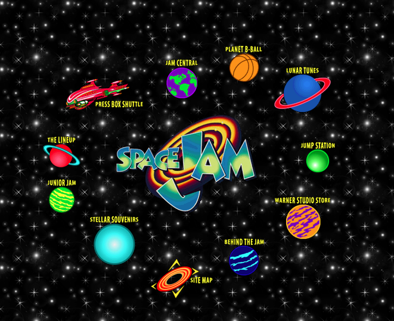
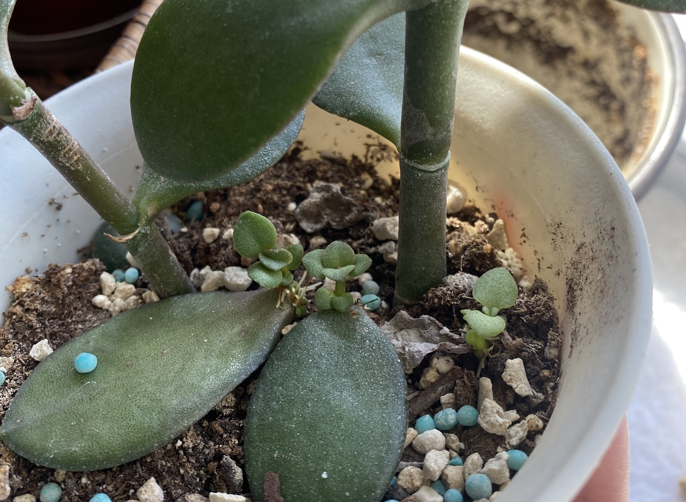
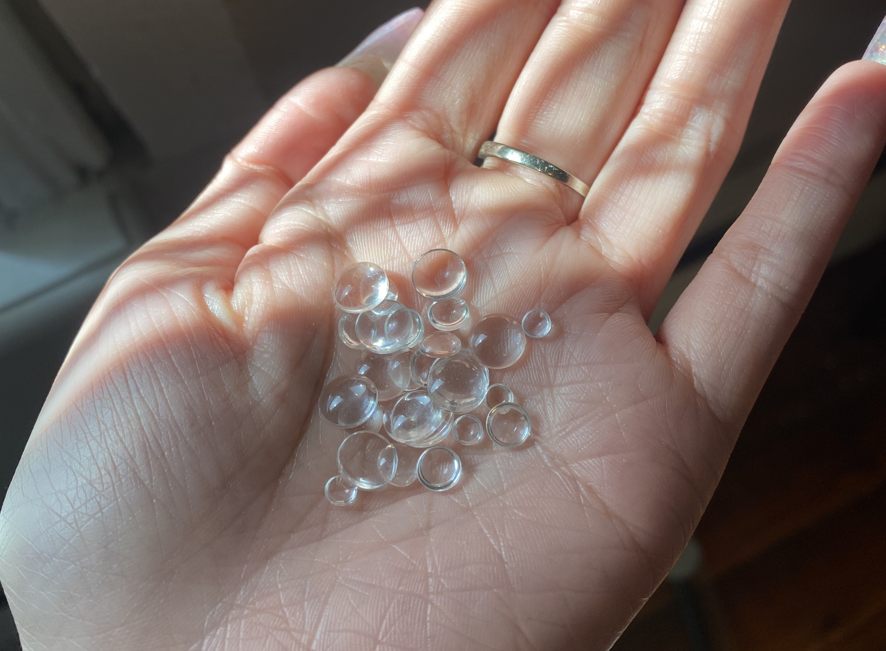
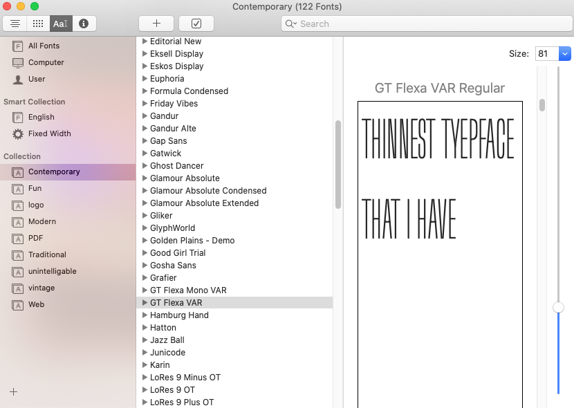
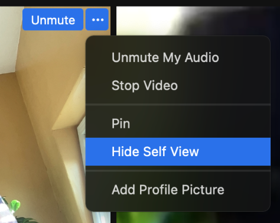

DP data list
eileen tran
☺
week 1:
3 places:
→

→

→

3 fears:
→ Getting sued for web accessibility
→ Getting cancelled bc lack of disability etiquette
→ Netflix being sued bc they didn't have closed captioning options on a selection of Netflix media
3 huge objects:
→ 
→

3 tiny objects:
→ 
→ 
→ 
3 supermarket items that could nourish your thinking:
→ 
→ 
→ 
3 hardware store items that pertain to your thinking:
→ 
→ 
→ 
3 abstract qualities:
→ 
→ Teach yourself not to touch your face
→ The Work week
3 physical qualities:
→ 
→
→ Breakdown of marine debris
3 people (from any realm or time) who influence your thinking/work:
→ P1:

→ P1:

→ P1:

3 events from history that give context to your thinking:
→ P1:

→ E1: 
→ E1: Anti-colonial movement of Vietnam, Laos, Cambodia (Indochina) in relation to the Black Freedom Movement. Liberation movements of Africa and Asia
3 films that could be the start of a film series reflecting your interests:
→ E1: The Farewell
3 designers or studios whose work helps extend your inquiry:
→ E1: Christine Sun Kim
→ E1: Nicky Tesla
→ E1: Olafur Eliasson
3 books from your reading list:
→ E1: The Politics of Design by Ruben Pater
→ E1: Design is the Problem by NATHAN SHEDROFF
→ E1: ACCESSIBILITY FOR EVERYONE by Laura Kalbag
3 websites that lead us further into your interests:
→ E1: The decolonizing,
or puncturing, or de-Westernizing design Reader by Ramon Tejada
→ E1: Shareable Collection by Eileen Tran
→ E1: Bot or Not? by Eileen Tran
3 results of links from those three sites:
→ E1: Against Performative Positivity by Danah Abdulla
→ E2: CSS Letterforms
→ P1: